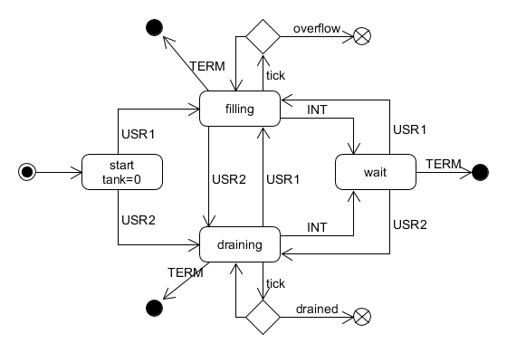

Write an sh script, tanker.sh, that simulates a storage tank being filled and drained.
- accept one command line argument: a number representing the maximum storage capacity of the tank
- starts the tank as empty, and as neither filling nor draining
- upon receiving the USR1 signal, the tank begins to fill at a rate of 1 unit per second
- upon receiving the USR2 signal, the tank begins to drain at a rate of 1 unit per second
- while filling or draining, the tank should print its state, once per second
- upon receiving the INT signal, the tank stops filling or draining
- the tank cannot be both filling and draining at the same time, it can only be one or the other, or neither
- on any state change, the tank should print a status message
- if the tank overflows, the script exits with failure
- if the tank empties, the script exits with failure
- upon receiving TERM, the program exits with success (assuming it has not overflowed or drained)
- use the "sleep" command to control the rate of fill/drain
- your script will not respond to signals while it is in the sleep state
Show me your progress at the end of lab, you are allowed to collaborate with your neighbours and/or work in pairs. There must be working code for every group of 2 people.
